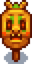
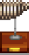

Müze
| Yıldızçiyi Vadisi Müzesi & Kütüphanesi | |
 | |
 | |
| Açık Saatler: | 08.00 - 18.00 |
| Kapalı Günler: | Kasabadaki festival günlerinde |
| Adres: | Pelikan Kasabası'nın doğusunda, Demircinin güneyinde |
| Oturanlar: | |
Müze, Pelikan Kasabası'nın güneydoğu köşesinde ve Demircinin güneyinde bulunur.
Müzede bir kütüphane ve müzenin koleksiyonunu sergileyen bir galeri bulunur. Oyunun başında müze koleksiyonu tamamen boştur ve müze müdürü Gunther da oyuncudan eser ve mineral bağışlayarak yardımcı olmasını ister.
Bir ögeden yalnızca bir tanesi bağışlanabilir. Bağışlanmayan bir ögenin envanterde ve sandıkta açıklaması "Müze'ye bağışta bulunursan, Gunther bu konuda sana daha fazla bilgi verebilir." olarak gözükür. Bağışlama arayüzünde veya Gunther'ın masasının sol tarafındaki küçük kağıda tıklayarak ögelerin yeri değiştirilebilir. Bağışlanan ögelerin üstünde sağ tıklanarak incelenebilir.
Salı, çarşamba ve cuma günleri Penny, Vincent ve Jas'e kütüphanede ders verir.
Bağış Ödülleri
Gunther, koleksiyon bağışlarının belirli aşamalarında veya belirli eserlerin bağışlanması karşılığında ödüller verir.
Toplam Bağışlar
Müze'ye bağışlanabilir 95 adet öge bulunur.
| Bağışlanan Öge | Ödül |
|---|---|
| 5 | |
| 10 | |
| 15 | |
| 20 | |
| 25 | |
| 30 | |
| 35 | |
| 40 |  İlginç Korkuluk #8 (+ "Hazine Avcısı" başarımı) |
| 50 | |
| 60 | |
| 70 | |
| 80 | |
| 90 | |
| 95 (tüm ögeler) |
Mineral Bağışları
Müze'ye bağışlanabilir 53 adet mineral bulunur.
| Bağışlanan Mineral | Ödül |
|---|---|
| 11 | |
| 21 | |
| 31 | |
| 41 | |
| 50 |
Eser Bağışları
Müze'ye bağışlanabilir 42 adet eser bulunur.
'Yanık Teklifler' ödülünü alabilmek için içlerinde Nadide Disk ve Cüce Aygıtı bulunmak üzere en az 10 adet eserin bağışlanmış olamsı gerekir. Bu şartları karşılayan 11. (veya sonraki) bağış, 'Yanık Teklifler' ödülünü verecektir.
| Bağışlanan Eser | Ödül |
|---|---|
| 11 (içlerinde şunlar olmalı): |
|
| 15 | |
| 20 | |
| 3 (içlerinde şu olmalı): |
|
| 3 (içlerinde şu olmalı): |
|
| 5 (içlerinde şu olmalı): |
|
|  Tembel Hayvan İskeleti (Orta) | |
Kitaplar
- Ana makale: Kayıp Kitaplar
Başarımlar
Müze'ye eser veya mineral bağışlama ile ilgili 2 başarım bulunur.
- Hazine Avcısı (Müzeye 40 farklı öge bağışla.)
- Koleksiyoncu (Müze koleksiyonunu tamamla.)
Notlar
- Bağış yerleştirilebilecek 102 adet kare bulunur ancak bağışlanabilir 95 adet öge bulunur. En büyük masanın ortasındaki altı boşluğa öge yerleştirilirse bu ögelerin üstüne tıklanarak incelenemez, bu yüzden bu karelere öge koyulmaması önerilir.
- Oyun kumandası ile oynanılıyorsa ayrıca çapraz ögelere de inceleme amacıyla tıklanamayabilir.
- Switch'te bağışlama arayüzünde ögelerin yerini değiştirebilmek için "Ayarlar"dan "Kumanda Tipi Menü'yü Kullan" ayarı açılmalıdır.
- iOS'ta (ve muhtemelen diğer mobil cihzalarda) bağışlama arayüzünde en alt sıradaki ögelerin yeri değiştirilemez. Ancak Gunther'ın masasındaki seçenekten koleksiyon düzenlenirse (koleksiyon tamamlanmamış olsa bile) bütün ögeler hareket ettirilebilir.

Müzenin içi (erişilemeyen kareler gölgeli gösterilmiştir)

Örnek bir müze düzeni
Geçmiş
- 1.3.32: Müzenin en altta olan iki sırasına öge yerleştirilememesi düzeltildi.
- 1.4: 35, 70, 80 ve 90 öge bağışları için ödüller eklendi. Yeni bir bağış yapmaya gerek olmadan müze eserlerinin yerini değiştirebilme özelliği eklendi. Bağışlama ekranında envanterin soruna yol açtığı bir hata düzletildi. Çok oyunculu bir oyunda koleksiyonun yeniden düzenlenmesinin sohbete yeni bir öge bağışlandığı mesajını göndermesi düzeltidli. Bağışlama ile ilgili çeşitli hatalar düzeltildi.
- 1.5: Müze bağışı etkileşimleri iyileştirildi.
- 1.6.9: Artık eserlerin ve minerallerin açıklamaları, Müze'ye bağışlanana dek Koleksiyonlar sekmesinde gözükmüyor.
| Binalar | ||
|---|---|---|
| Tüccarlar | Ada Taciri • Balıkçı • Bay Qi'nin Ceviz Odası • Büyücü'nün Kulesi • Çöl Tüccarı • Demirci • Dondurma Standı • Gezgin Araba • Harvey'nin Sağlık Ocağı • JojaMart • Kumarhane • Maceraperestler Loncası • Marangoz Atölyesi • Marnie'nin Çiftliği • Pierre'in Bakkalı • Vaha • Yanardağdaki Cüce • Yıkık Ev • Yıldızkaydı Salonu | |
| Evler | Ada Çiftlik Evi • Ağaç Ev • Başkan'ın Köşkü • Çadır • Çiftlik Evi • Elliott'ın Barakası • Irmak Sokağı, No: 1 • Irmak Sokağı, No: 2 • Karavan • Leah'nın Barakası • Dağ Sokağı, No: 24 • Söğüt Sokağı, No: 1 • Söğüt Sokağı, No: 2 | |
| Çiftlik Yapıları | Çiftçilik | Ahır • At Ahırı • Balçıkça Kümesi • Balık Havuzu • Baraka • Kulübe • Değirmen • Kuyu • Kümes • Sera • Silo |
| Özel | Ada Dikilitaşı • Altın Saat • Çiftlik Dikilitaşı • Çöl Dikilitaşı • Junimo Barakası • Su Dikilitaşı • Toprak Dikilitaşı | |
| Diğer Binalar | Araştırma Çadırı • Cadı'nın Barakası • Halkevi • Hamam • Joja Deposu • Köpek Oyun Alanı • Müze • Sinema Salonu | |